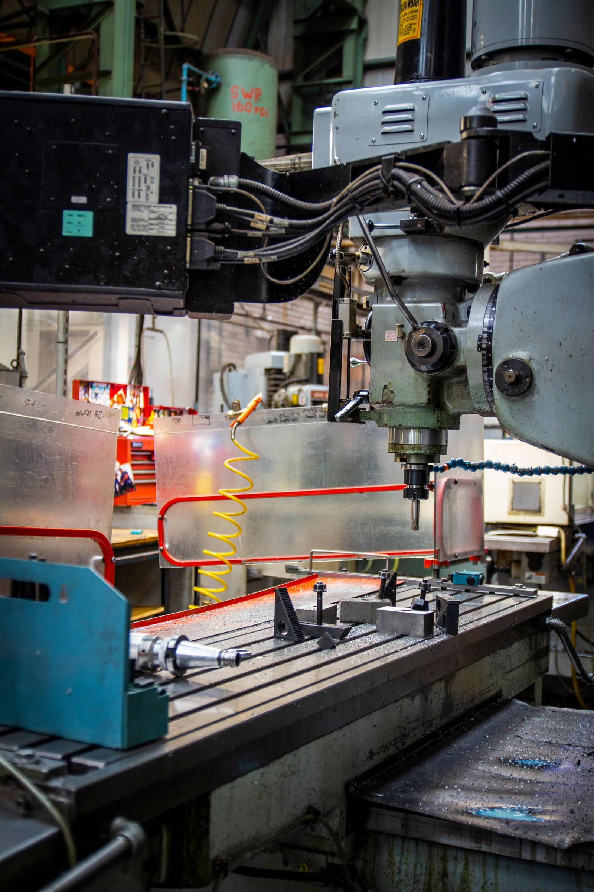

Sheet 03 — About & terms
The machinist, the method, and the terms — in that order.
Steel is a polite metal. Titanium argues — in the cut, in the tool bill, and never afterwards on the wrist. This shop was set up in 2012 to have that argument properly, for the independent makers who cannot justify a case department of their own.
Trained on tools, then on cases
Oskar Feldmann trained as a toolmaker in Solothurn — four years of apprenticeship, files before machines, measurement before both. Eleven years followed at a case manufacturer in the Jura whose name belongs on their cases, not on this page; the work there was steel and gold, in volumes this shop will never see, and it taught the two habits that run Feldmann Case Works: a tolerance is a measurement with a date on it, and a batch with a problem is stopped, not sorted.
The shop in Grenchen machines titanium only. Two five-axis mills, one lathe, a finishing bench of one pair of hands, and a metrologist — M. Gerber, two days a week — who measures what the machinist machines. The person who cuts a case is never the only person who measures it. That separation is the whole quality system; everything else is paperwork, and the paperwork is printed on Sheet 01.

How a case runs
- 1Drawing & tolerance agreementThe client's drawing is read against Table T1. Tolerances are agreed in writing before anything is priced — a tolerance the shop cannot hold is refused at this step, in writing, with the floor stated.
- 2Programming & setupToolpaths programmed per class; the setup sheet lists the warm-up cycle and tool lives in cases. Both are initialled before the first cut — a rule written by Case File 02.
- 3MillingProfile and pocket from the solid blank, under coolant. The longest single operation in Table O1, and the one titanium argues with most.
- 4TurningCaseband and caseback seat on the lathe. Diameters are measured at this station, on every case, before the batch moves on.
- 5Drilling & tappingCrown tube, pusher bores, lug holes. Done before finishing, always — no drill crosses a finished surface.
- 6Hand finishingBrushed, blasted, mixed or polished, at the hand minutes in Table F1. One pair of hands, one case at a time.
- 7InspectionAt 20 °C, on calibrated instruments: diameters and caseback seat on every case, remaining features one in five on the CMM, measured by the metrologist. Results go on the run's measurement sheet, case by case.
- 8Dispatch with the sheetCases travel with their measurement sheet. The client's own instruments are expected to check it — the sheet is written to survive that check.
What this shop will not do
It will not print a tolerance it cannot hold. The floors are ±0.005 mm for Classes R and C and ±0.008 mm for Class S (Table T1). The old version of this page claimed ±0.002 mm, because the drawing office liked the look of it. The claim was removed and the floor printed instead; the run planner in §03 of Sheet 01 refuses the tighter figure in the open, so the refusal does not depend on remembering to have a difficult conversation.
It will not name its clients. The register describes case types, classes and counts. A brand is named only with written consent — one client has given it, and his name appears exactly where his consent covers: the register, and Case File 01. Drawings sent to this shop are read by two people and shared with no one; the shop's confidentiality is part of why the dials stay anonymous.
It will not sort a drifted batch. When a run drifts, the batch is scrap and the rerun is the shop's cost. That has happened twice since 2012; one of the two is written up in full as Case File 02, including whose initials were on the setup sheet.
It will not pretend the metal is cheap to cut. Titanium's tool wear and cycle time are printed in Tables O1 and P1 as cost drivers, in numbers. A titanium case costs what it costs because the metal eats tools and leaves seven tenths of itself as swarf — stated here, so it never has to be explained on an invoice.
The basis, before the work
| Item | Basis |
|---|---|
| Tolerances | Agreed in writing before a run starts, against Table T1. The agreed band, not the drawing's wish, is what inspection reports against. |
| Measurement method | Stated in every quote: instruments, temperature (20 °C), which features are measured on every case and which are sampled. The method in the quote is the method on the sheet. |
| Prototypes | Paid in full before cutting, at Table E1 prices. A prototype is one case with its measurement summary; the full report is a priced line, not a favour. |
| Production runs | 40% deposit on order, balance against the measurement sheet before dispatch. Setup is charged once per run (Table P1). |
| Scrap & reruns | Losses inside the Table Q1 allowance are the shop's. A batch that drifts outside the agreed band is scrapped whole and rerun at the shop's cost; the client's price does not change. |
| Lead times | Prototypes 3–5 weeks from payment. Runs are quoted against the current queue — the register on Sheet 01 states what is on the machines. |
| Confidentiality | Client names, drawings and counts stay in the shop. Naming in any publication needs written consent, per client, per use. |
Start with the enquiry sheet — class, quantity, and the tolerance you actually need. If the tolerance is beyond the floor, the reply will say so and print the floor, which is the same answer the planner gives.